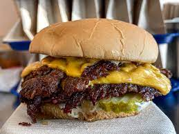

Smashburgers

Description
Smashburgers are hamburgers that are pressed down on a cooking surface to make a delicious brown crust. All you need is a cast iron pan!
Ingredients
- Butter
- Potato buns
- Canola Oil
- 80/20 ground beef
- American Cheese
Directions
- Heat cast iron pan over high heat and butter your buns.
- Once pan is hot place buns on pan to toast them. Check buns occasionally until they are golden brown.
- Once buns are toasted pour 1/4 tsp of canola oil on the pan and swirl it, covering the pan. Let the oil heat until shimmering
- Take 4 ounces of chop meat and make it into a ball. Using an offset spatula place the meat on the pan and press down on it. Let the burger cook until the sides start to brown then flip it.
- If using cheese, place a slice of American cheese on top of the burger. Once the cheese is melting down the sides the burger is cooked. Place on bun and serve with your desired toppings.